DECISION TREE.
Introduction
A decision tree is a tree-like model that illustrates the various decisions and the outcomes of each possibilities. In machine learning, it used as an algorithm to display conditional outcomes based on the nodes (label) and their roots (outcomes of the test). It is a type of supervised machine learning model.
Python - Data
The data for creating the decision trees in Python was gathered from NewsAPI. This data will be useful in parsing through various news related to climate change, global warming, and renewable energy; all of which are the key words used to makes the root nodes of the decision tree.
Python - Code
Please find the code below for the creating decision trees in python.
CODE: Python - Decision Trees
Cleaning NewsAPI Data
The raw data collected can be found below. The news articles are labeled by the key word used to generate the articles (labels).
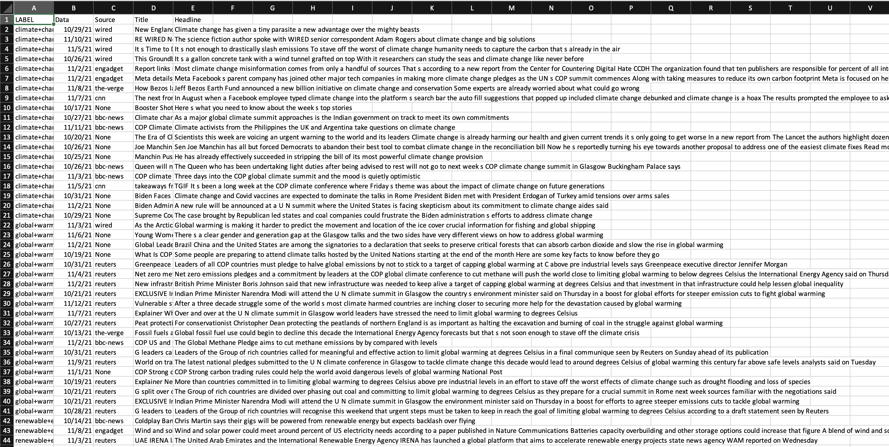
This is a screenshot of the raw data gathered from the NewsAPI.
Download python_uncleaned.csvThe cleaning has been done via removing stop words and any meaningless words. Then using Count Vectorizer, a cleaned csv file was created created with relevant words as the variables (columns) and the topics as the labels (first column for each row).
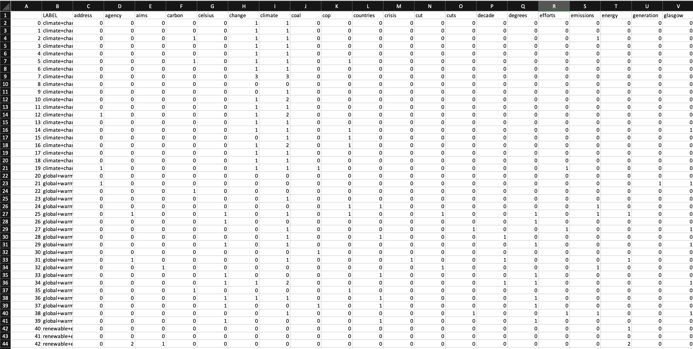
This is a screenshot of the cleaned NewsAPI data.
Download python_cleaned.csvThree word clouds were generated to visualize the data pulled from each topic: climate change, global warming, and renewable energy.
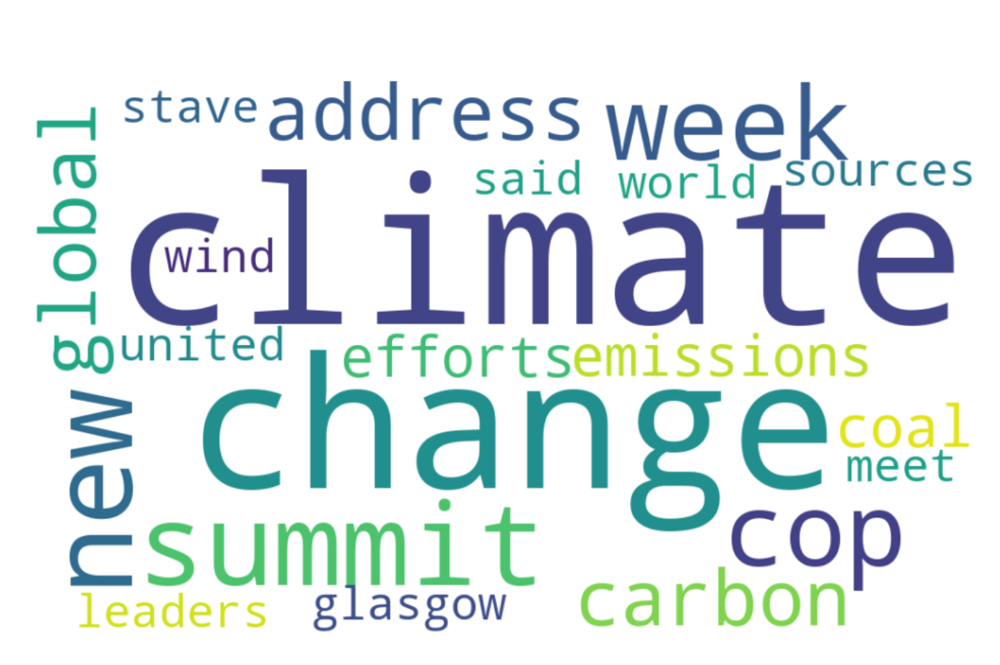
Wordcloud for climate change.

Wordcloud for global warming.

Wordcloud for renewable energy.
Python: Decision Tree
The decision trees were created via sklearn.tree import DecisionTreeClassifier and plot_tree. Confusion matrixes were also formed from each decision tree. These are used to describe the performance of a classification model. The x axis is the Prediction and the y axis is the Actual value. The Gini and entropy are both criterion for calculating information gain. Gini is the measure how often a randomly chosen element would be incorrectly labeled. And, entropy is to measure the disorder of a grouping by the target variable.
Python: Decision Tree Results
The first decision tree created used criterion equal to entropy and splitter equal to best. The result can be seen below:
Key Parameters: criterion='entropy', splitter='best', min_samples_split = 2, min_samples_leaf = 1
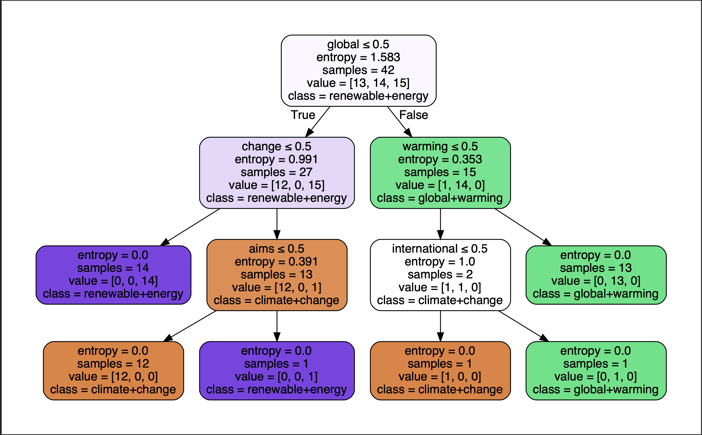
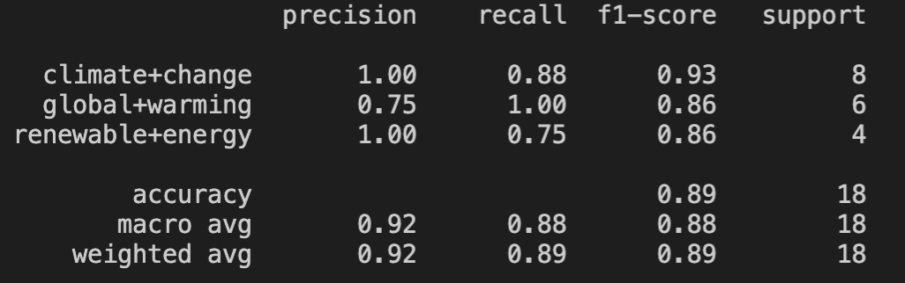
The second decision tree created used criterion equal to gini and splitter equal to random. The result can be seen below:
Key Parameters: criterion='gini', splitter='random', min_samples_split = 2, min_samples_leaf = 1

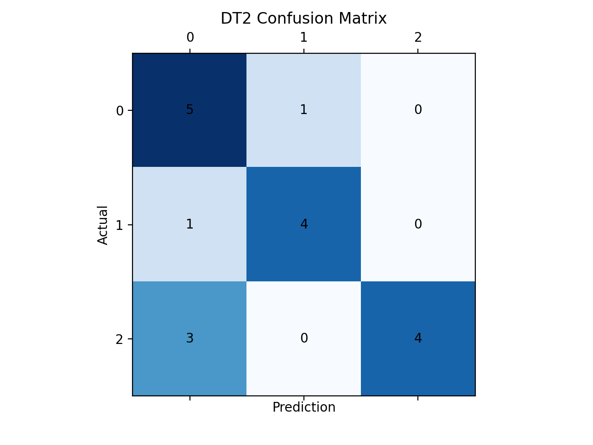
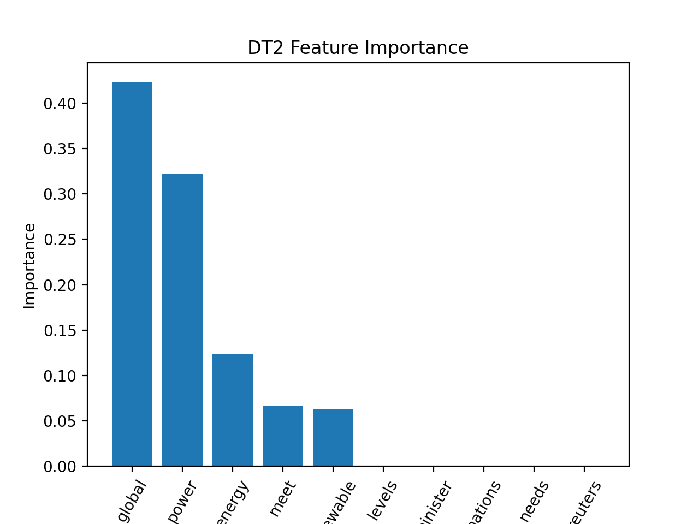
The third decision tree created used criterion equal to gini and splitter equal to best. The result can be seen below:
Key Parameters: criterion='gini', splitter='best', min_samples_split = 2, min_samples_leaf = 1, max_depth = 10

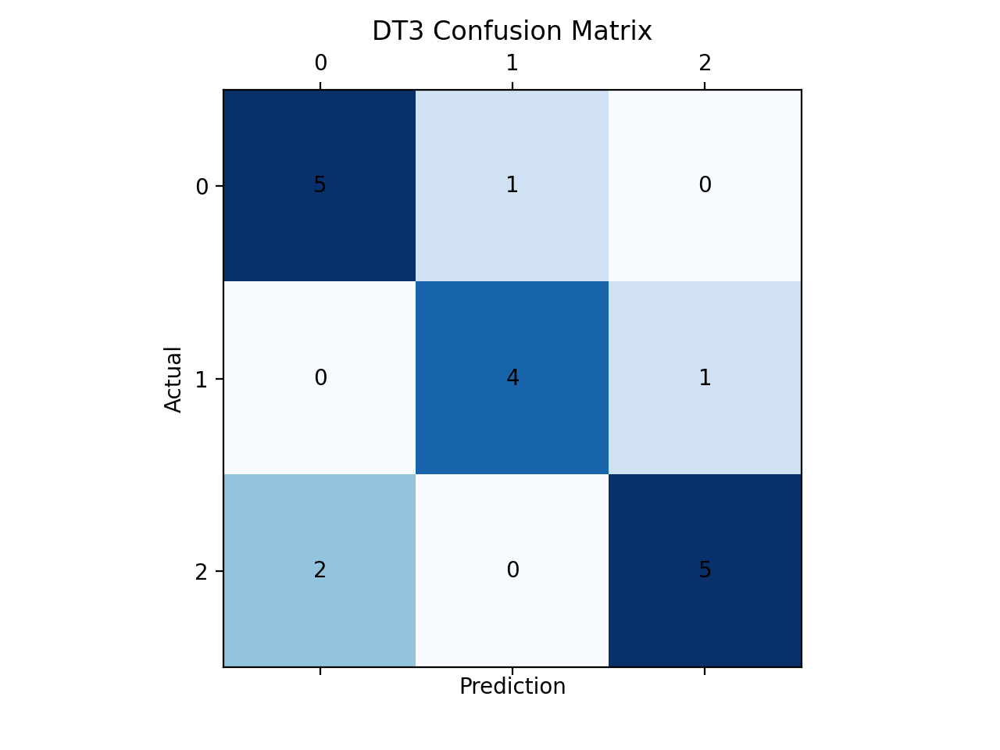
>
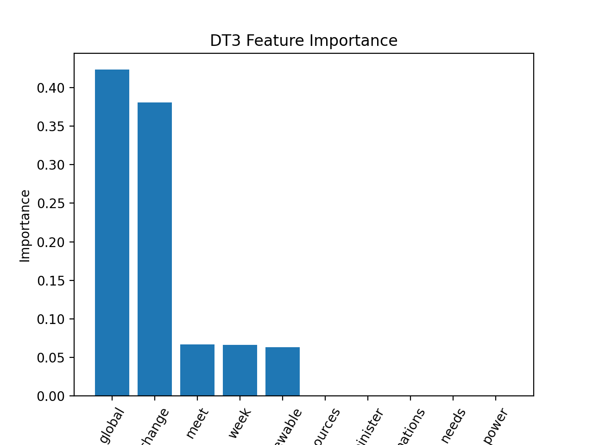
Python - Decision Tree Conclusion
In predicting vairous news artciles of key words related to climate change, we can note that the decision tree did a fairly good job, predicting ~86% for each key word. The key parameters in the deicsion tree that were chosen to build the trees were criterion, splitter, and max_depth. Within criterion, we have two impurities: gini and entryop. The gini impurity measures the frequency at which any element of the dataset will be mislabelled when it is randomly labeled. Entropy is a measure of information that indicates the disorder of the features with the target. Similar to the Gini Index, the optimum split is chosen by the feature with less entropy. In the three decision trees, we can note that the differences weren't seen much depending on the type of entropy used. For splitter, we can note that there are two features which decide what threshold to use: best and random. Using best, the model is taking the feature with the highest importance. Using random, the model sf taking the feature randomly but with the same distribution. We can also note that the across the three types of entropy, the various precition rates weren't affected. And, finally for Max-depth, since it controls the depth of decision tree, which is how big a tree is, more difference in the tree was shown.
For Decision Tree 1, according to the classification report and confusion matrix, there are 2 wrong predictions for climate change, 1 wrong prediction for global wamring, and 1 wrong preidciton for renewable energy. The accuracy of Decision Tree 1 is 0.89.
For Decision Tree 2, according to the classification report and confusion matrix, there are 2 wrong predictions for climate change, 1 wrong prediction for global wamring, and 1 wrong preidciton for renewable energy. The accuracy of Decision Tree 2 is 0.89.
For Decision Tree 3, according to the classification report and confusion matrix, there are 2 wrong predictions for climate change, 1 wrong prediction for global wamring, and 1 wrong preidciton for renewable energy. The accuracy of Decision Tree 3 is 0.89.
Looking at the various feature importances of the decision tree, we can note that the most important words are "global", "power", and "energy". This makes sense, as these words would be key in determining if the article is about one of the three topics generated for the NewsAPI.
Looking at the accuracies of the various decision trees genearted, it can infered that all the decision tress make equal sense in predicting if an article is about climate change, global warming, or renenwable energy. This makes sense, as these words are interrelated and are also bleak synonyms of each other. In other words, key words in a global warmining related article will have key words related to an artcile with climate change and renewable energy. A better analysis should be done in the future which showcases three distinct topics of global warming, such as maybe, fossil fuels, etc.
It can be noted that Decision Trees can be used to deal with complex datasets, and can be pruned if necessary to avoid overfitting. It can be also seen that they are popular in data analytics and machine learning, with practical applications across sectors from health, to energy, and clime change.
R - Data
The data for creating the decision trees in R was gathered from the data cleaining tab, specifically the numeric section. This raw data showcases the global land temperature by country. The dataset spans across over a hundred countries as well as weather points dating back from the 1750's. The temperature data presented here is in Celsius. Feature extraction was performed to get the data of countries USA and India. To accomplish this in R, the data was read in by getting the country code 'USA' and 'India'. Next, the date data was converted to months and years as features in the dataset along with the month number correlating to the abbreviation. Then, applying another feature extraction, the celsius data was converted to fahrenheit (by the formula 9/5*C + 32). Next, using a simple key of very cold to very hot, based on the fahrenheit scale, a feature was made to determine the "sense" of the weather. Finally, this transform was outputted as a csv. The code for cleaning the data can be found below as well as USA specific dataset and the dataset used to create the decision tree.
Code for cleaning the raw data to country specific data along with feature generation.
CODE: R Cleaning - Country
USA climate dataset.
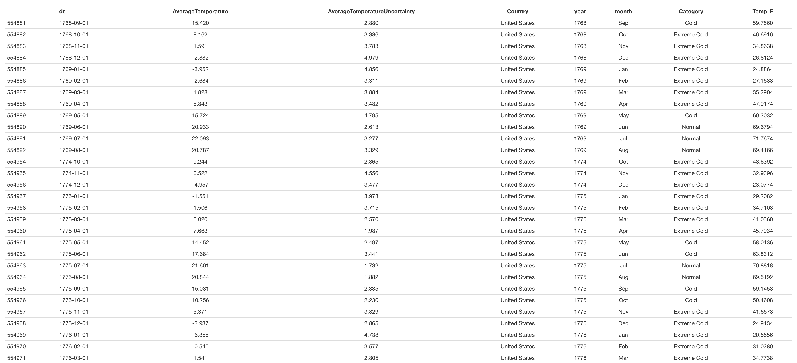
Download USA_Climate.csv
Dataset used to generate decision trees in R.
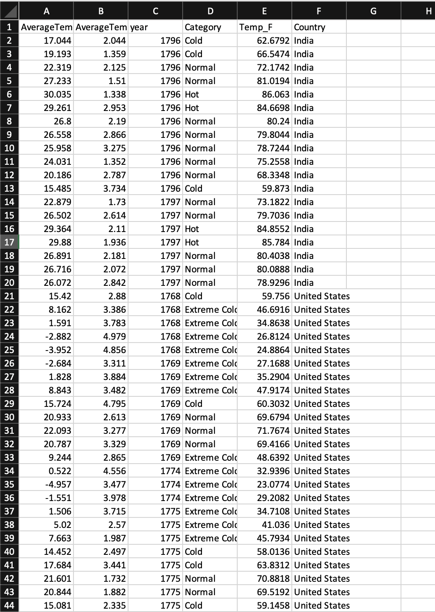
Download small_sample.csv
R - Code
The code for creating the decision trees in R can be found below. The model was generated via the rpart library and where the testing and training were split into 30% and 70% respectively.
CODE: R - Decision Trees
R: Decision Tree Results
The first decision tree uses the average temperature category as the root node. The category can be broken down into cold, normal, or hot.
rpart(MyTrainingSet$Category ~., data=MyTrainingSet, cp=0, method="class", parms=list(split="information"), minsplit=2)
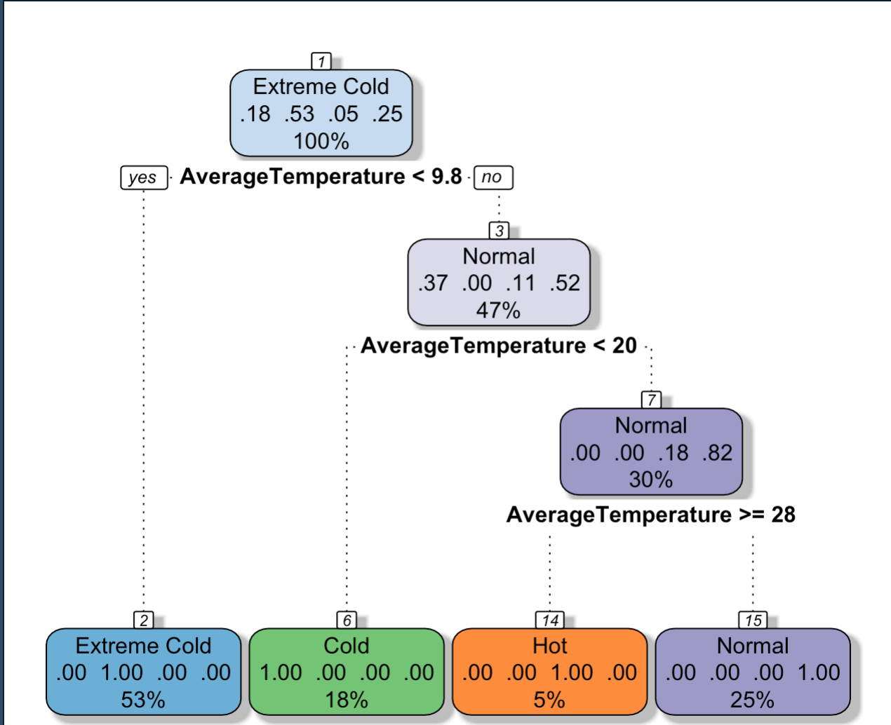

In this decision tree, the root node is changed to the variable, year. In this dataset, the year are all the years from 1770-1779. The split was information and a cp of 0.
Key Parameters: criterion='gini', splitter='random', min_samples_split = 2, min_samples_leaf = 1
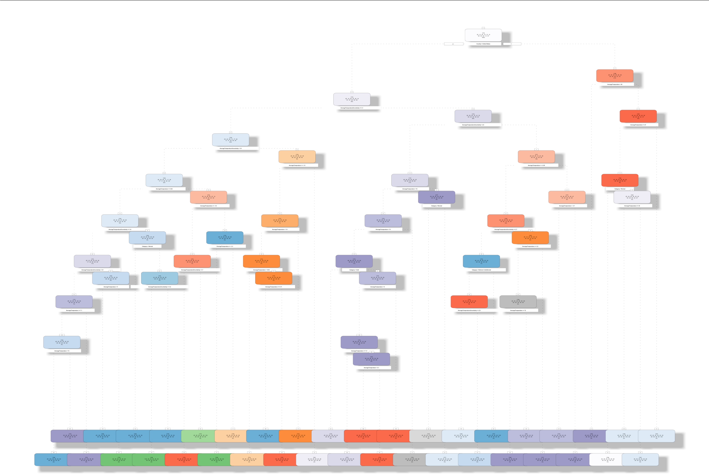

In this decision tree, the root node is changed to the variable, country. In this dataset, the Gender is either India or USA. The split was information and a cp of 0. The decisions are based on the avergaetemperature based in celcius.
Key Parameters: criterion='gini', splitter='best', min_samples_split = 2, min_samples_leaf = 1, max_depth = 10
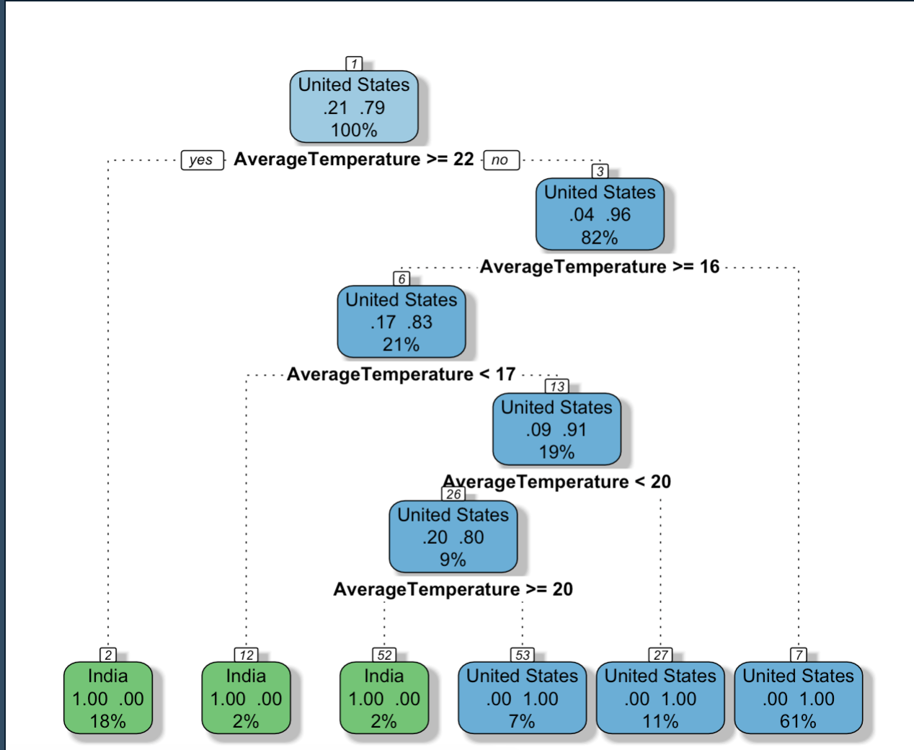

R - Decision Tree Conclusion
In predicting vairous news artciles of key words related to climate change, we can note that the decision tree did a fairly good job, predicting ~96 for the first decision tree, 90% for the second, and 84% for the third.
For Decision Tree 1, according to the classification report and confusion matrix, there are 8 wrong predictions for cold, 0 wrong prediction for extreme cold, 0 for hot, and 1 for normal. The accuracy of Decision Tree 1 is 0.96.
For Decision Tree 2, according to the classification report and confusion matrix, there are 0 for 1768, 0 for 1796, 0 for 1774, 1 for 1775, 0 for 1776, 1 for 1777, 0 for 1778, 0 for 1779, 2 for 1781, 0 for 1796, and 0 for 1797. The accuracy of Decition Tree 2 is 0.90.
For Decision Tree 3, according to the classification report and confusion matrix, there are 5 wrong for India nd 2 wrong for USA. The accuracy of Decision Tree 3 is 0.84.

Looking at the various feature importances of the decision tree, we can note that the most important features to determining the success of a decision tree is the averagetemperature and the temperature in farenheight.
Looking at the accuracies of the various decision trees genearted, we can note that the most effective and accuracte predictive model is by category. In essense, if given a temperature and asked to predict if the temperature is cold or hot on a scale, the decision tree will predict the results with a 96% accuracy.
Based on the confusion matrix for all the matricies, we can see that the prediction results aren't as bad as the ones in resulted in the python section. We can note taht based on the confidence interval for decition tree number 1 and three, that there is a tight upperbound fix for both of them. For decision tree number 2, due to the sheer high number of nodes, it can infered that a low predictive rate can be generated just becasue of the poor correlation of the years to the average temperature. A fix around this would be probably looking at the months instead of the years, and trying to identify a correlation between the seasons and the temperature.
It can be noted that Decision Trees can be used to deal with complex datasets, and can be pruned if necessary to avoid overfitting. It can be also seen that they are popular in data analytics and machine learning, with practical applications across sectors from health, to energy, and clime change.